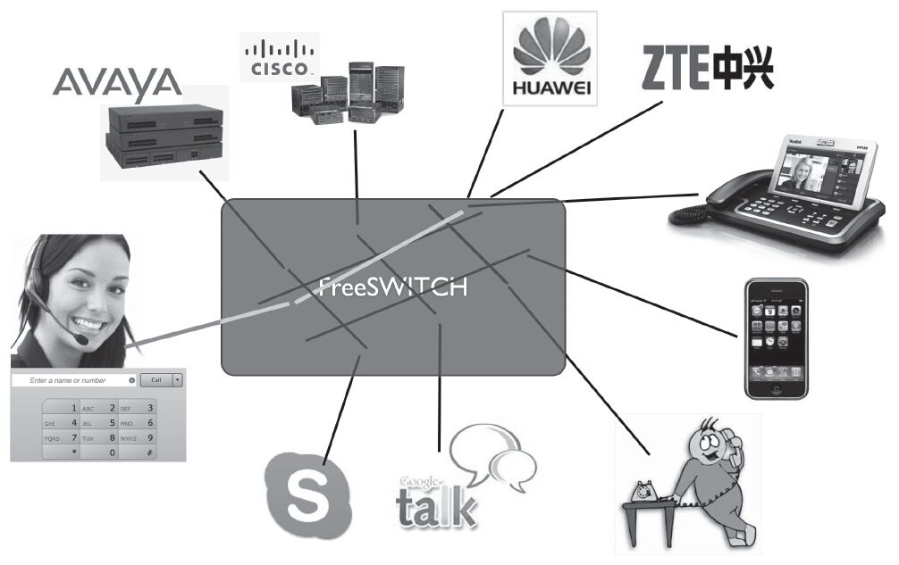
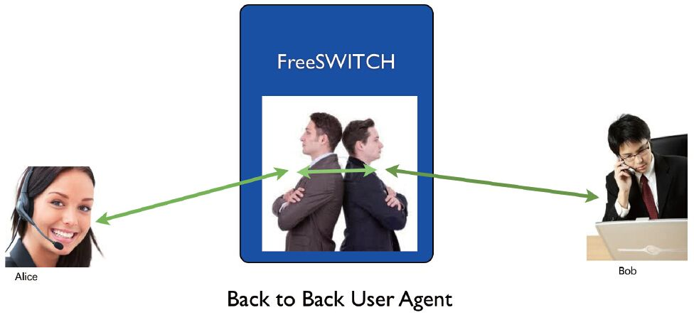

3.1 什么是FreeSWITCH？
什么是FreeSWITCH？这一问题恐怕是初次见到本书的人首先要问的。很遗憾，我们一直到本章才回答这个问题。其实好多人问这一问题，并不是期望我们能给FreeSWITCH来下一个准确的定义，而是想知道，它到底能做什么。下面我们就来看一下FreeSWITCH的概念和功能。
3.1.1 FreeSWITCH的概念
FreeSWITCH是一个开源的电话交换平台。官方给它的定义是——世界上第一个跨平台的、伸缩性极好的、免费的、多协议的电话软交换平台 [1] 。由这个定义我们可以得出以下几点：
·FreeSWITCH是跨平台 的。它能原生地运行于Windows、Max OS X、Linux、BSD及Solaris等诸多32/64位平台（甚至，也有人成功地将它应用于Linksys NLS2平台及Raspberry Pi上 [2] ）。
·FreeSWITCH具有很强的可伸缩性 。FreeSWITCH从一个简单的软电话客户端到运营商用级的软交换设备几乎无所不能。
·FreeSWITCH是免费的。它采用MPL 1.1 [3] 协议授权，意味着任何人都可以免费使用并获取源代码，任何人都可以修改、发布甚至出售自己的应用。
·FreeSWITCH支持SIP、H323、Skype、Google Talk等多种通信协议，并能很容易地与各种开源的PBX系统（如sipXecs、Call Weaver、Bayonne、YATE及Asterisk等）通信，它也可以与商用的交换系统（如华为、中兴的交换机或思科、Avaya的交换机等）互通，如图3-1所示。

图3-1 FreeSWITCH支持多种协议
·FreeSWITCH可以用作一个简单的交换引擎、一个PBX、一个媒体网关或媒体支持IVR的服务器，或在运营商的IMS网络中担当CSCF或Application Server等。
·FreeSWITCH遵循相关RFC并支持很多高级的SIP特性，如Presence、BLF、SLA以及TCP、TLS和sRTP等。它也可以用作一个SBC进行透明的SIP代理（proxy）以支持其他媒体，如T.38等。
·FreeSWITCH支持宽带及窄带语音编码，电话会议桥可同时支持8、12、16、24、32及48kHz的语音。
·从技术上讲，FreeSWITCH是一个B2BUA [4] ，它作为一个背靠背的用户代理用来帮助通信的双方进行实时的语音视频通信，如图3-2所示。

图3-2 FreeSWITCH是一个B2BUA
3.1.2 FreeSWITCH的功能
FreeSWITCH是一个B2BUA，所以它能做的工作非常多。在国外，很多ISP和运营商把它作为关键的软交换设备，处理成千上万路的并发通话；也有的把它用于呼叫中心，与各种企业级的应用系统（如CRM、ERP等）集成；在国内，也已经有很多应用案例，其被广泛用于金融、保险、电力、石油、煤炭等领域的呼叫中心、企业通信以及应急指挥调度平台等。从这一方面讲，它是传统的电话交换系统及商业的电话交换系统良好的替代品。除了简单的替代以外，它往往还提供更多的新功能、更灵活的数据集成能力和更快速的应用开发能力，在业务需求千变万化的今天显得格外有生命力。
另外，在当今的移动互联、物联网与大数据、云计算盛行的时代，好多厂商和互联网的创业者也把FreeSWITCH用于通信领域的“云”平台。FreeSWITCH诞生的年代和背景、良好的设计架构以及活跃的技术支持社区都是它能在“云”平台上成功的坚实基础。
上面讲了FreeSWITCH的一些典型应用场景，下面看看它的典型功能：
·在线计费、预付费功能
·电话路由服务器
·语音转码服务器
·支持资源优先权和QoS的服务器
·多点会议服务器
·IVR、语音通知服务器
·VoiceMail服务器
·PBX应用和软交换
·应用层网关
·防火墙/NAT穿越应用
·私有服务器
·第三方呼叫控制应用
·业务生成环境运行时引擎
·会话边界控制器
·IMS中的S-CSCF/P-CSCF/I-CSCF
·SIP网间互联网关
·SBC及安全网关
·传真服务器、T.30到T.38网关
更多关于FreeSWITCH的特点和指标，可以参考http://wiki.freeswitch.org/wiki/Specsheet。
[1] The World's First Cross-Platform Scalable FREE Multi-Protocol Soft Switch-http://www.freeswitch.org。
[2] Raspberry Pi(http://www.raspberrypi.org/)是一个装有ARM CPU的信用卡大小的计算机。事实上，笔者办公室的IP-PBX就是一台运行着FreeSWITCH的Raspberry Pi。
[3] Mozilla Public License。详见：http://www.mozilla.org/MPL/1.1/。
[4] Back-to-back User Agent，背靠背的用户代理。事实上，B2BUA的概念会贯穿本书的始终，读者最好能理解它。